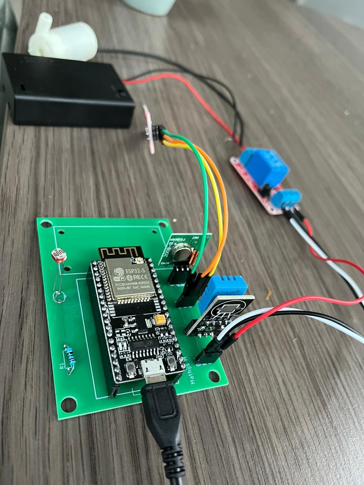
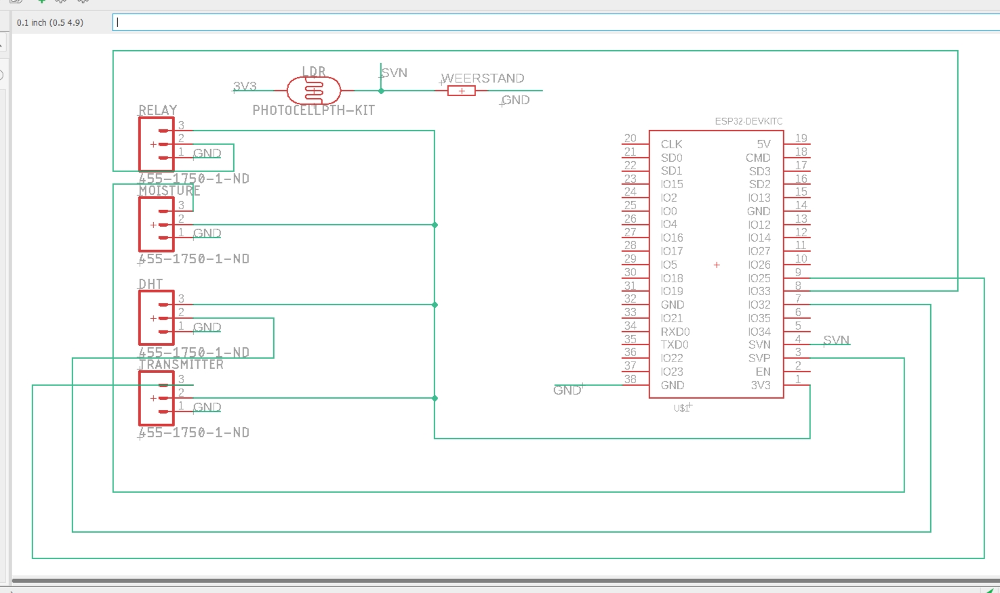
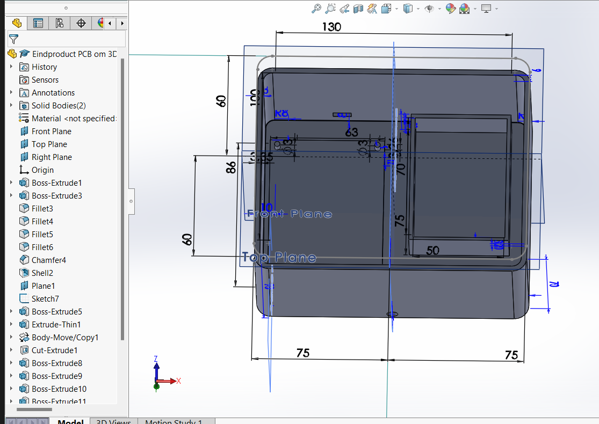

Terug


Ontwerp PCB & 3D printen
Nadat we alles hebben geprogrammeerd en uitgeprobeerd was het tijd om onze eigen PCB te ontwerpen via EAGLE die zonder draadjes werkt. EAGLE is een programma waarmee je de draadjes die normaalgesproken fysiek te zien zijn worden weggewerkt in een plaatje (PCB). Dit wordt gedaan in 2 bestanden: Board en Schematic. In het schematic bestand kunnen elementen worden toegevoegd en kunnen de elementen worden verbonden met de PCB, in het Board bestand kan vervolgens gesleept worden met deze elementen om de PCB zo te maken als de gebruiker het beste uitkomt. PCB staat dan ook voor Printed circuit board, met circuit worden de aansluitingen(draadjes) bedoeld die erin verwerkt zijn. doordat de draadjes weggewerkt zijn is het makkelijker om te zien waar alles in moet, het nadeel is wel dat als er iets fout is gedaan tijdens het ontwerp je hier na levering van de PCB niks meer aan kan veranderen. In de onderstaande afbeelding is de door mij ontworpen PCB te zien in het schematic bestand.
In het plaatje hier linksboven op deze pagina is de PCB te zien die ik geruik voor mijn eindproduct. hier is goed te zien dat er minder draden te zien zijn dan bij de vorige stap in Smart Technology
Nadat de PCB ontworpen was waren we aangekomen bij de volgende stap namelijk het solderen van de PCB. Het solderen wordt gedaan om de aansluitingen vast te maken aan de PCB, door het solderen worden deze elementen aan elkaar vast gemaakt zodat de stroom goed door PCB naar de aansluitingen kan geleiden. Hieronder zie je een filmpe waarop ik(rechts) aan het solderen ben:
De volgende stap was het maken van een bakje waar de PCB, batterij en Relay mooi in passen. Dit moest gedaan worden met 3d printing, met behulp van het programma Solidworks. Om dit programma te begrijpen hebben we meerdere cursussen gehad met tutorials die we konden volgen. aan de hand hiervan is het model dat hier onder staat ontworpen. Hierin heb ik een bakje ontworpen voor de batterij en een verhoging gemaakt met pinnen voor de PCB zodat deze beide blijven vastzitten op hun plek
Voor mij was het de eerste keer dat ik met dit programma werkte. Ik ben daarom erg tevreden met het resultaat en met de kennis die ik over dit programma heb opgedaan. Ik begrijp nu hoe het werkt en ben er redelijk handig in geworden. Hieronder is het ontwerp van mijn 3D bakje te zien zoals deze in Solidworks staat.
Praktijk
Toepassing Smart Technology (business context)
De opdracht die is uitgevoerd kan weldedgelijk teogepast worden in het dagelijkse bedrijfsleven. Zo kan dit systeem groter worden uitgevoerd en bijvoorbeeld worden toegepast in kassen of op het platteland. Door vochtmeters in de grond te steken kan gemeten worden wanneer planten water nodig hebben. Op deze manier zal er minder water verloren gaan, doordat er alleen water gegeven wordt wanneer de plant het daadwerkelijk nodig heeft. Ook zal het leiden tot minder verspilling omdat het minder vaak voor zal komen dat planten te veel of te weinig water krijgen waardoor ze kunnnen afsterven of waardoor de oogst kan tegenvallen.
Het programerren kan in brede schaal ingezet worden op het bedrijfsleven, het is nodig om machines te laten doen wat je wil. Een voorbeeld hiervan in ons project zijn de machines van de Hermle C30. deze machnines worden aangestuurd met codes die precies vertellen aan de machine waar hij heen moet. Het enige probleem bij ons project is dat de machine niet aangeeft wanneer hij stilstaat. in principe kan er een code geprogrammeerd worden in de machine waardoor deze een bericht verstuurd nadat er een foutmelding voorkomt. Deze oplossing lijkt simpel maar het vraag veel ervaring van coderen om gecompliceerde productiemachines te kunnen programmeren. Doordat ik deze minor heb gevolgd heb ik deze inzichten ontwikkeld en begrijp ik de techniek die achter processen zit beter dan ooit.